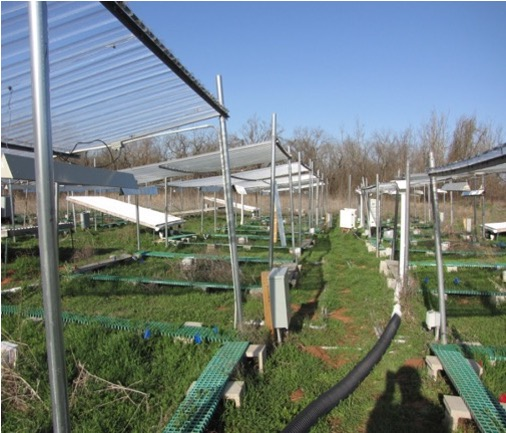

Ecosystem ecology · Soil carbon · Global change
Zheng Shi, Ph.D.
Research Scientist
Institute for Environmental Genomics, University of Oklahoma
I study how global change affects terrestrial carbon cycling by connecting field experiments, soil observations, and ecosystem models.
My research uses radiocarbon measurements, data synthesis, and model evaluation to understand soil carbon persistence and improve predictions of the land carbon cycle.

What I study
Research directions
From long-term experiments to global model comparisons.
Selected work
Publications
2024 · AGU AdvancesGlobal-Scale Convergence Obscures Inconsistencies in Soil Carbon Change Predicted by Earth System Models
2020 · Nature GeoscienceThe age distribution of global soil carbon inferred from radiocarbon measurements
2016 · Nature CommunicationsDual mechanisms regulate ecosystem stability under decade-long warming and hay harvest
View all selected publications
Get in touch
Connect
Institute for Environmental Genomics · University of Oklahoma